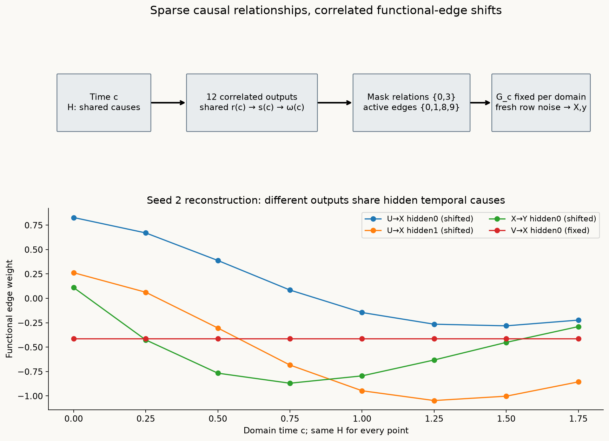
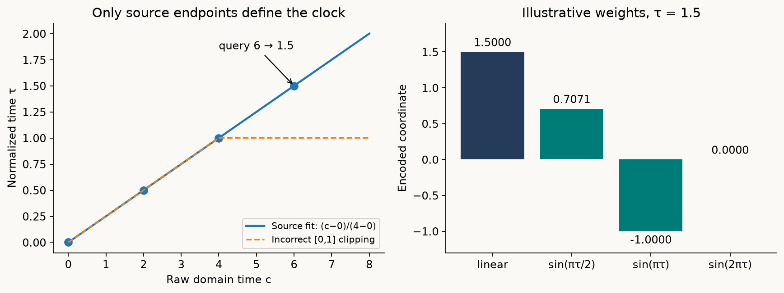
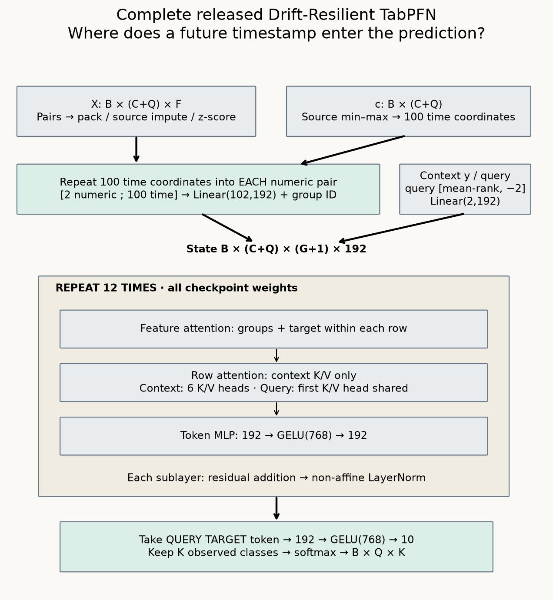
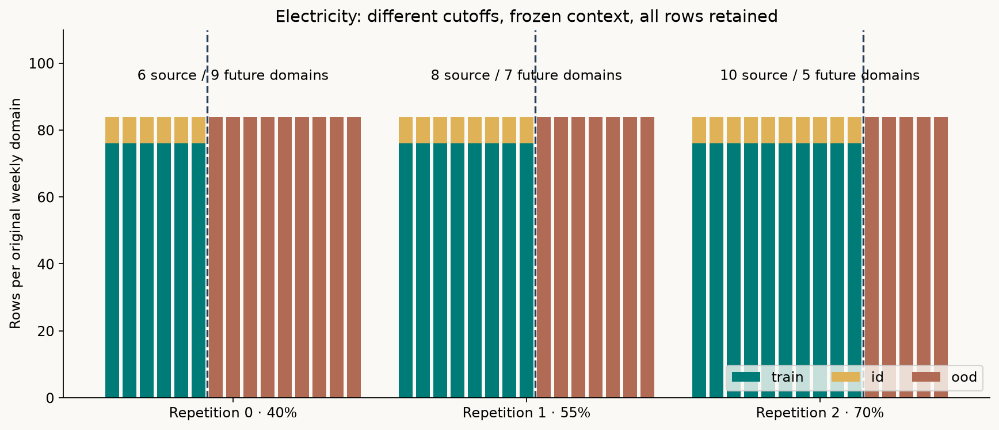
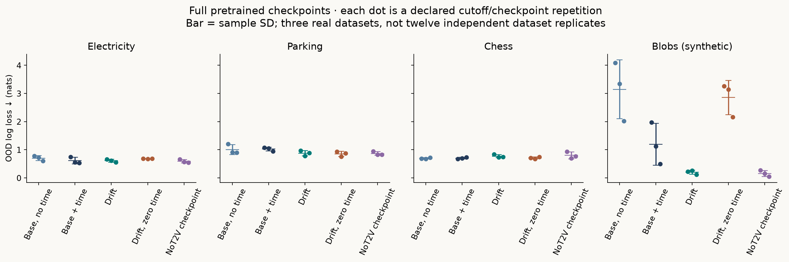
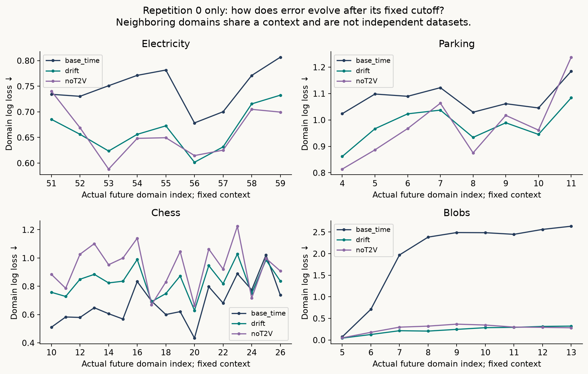
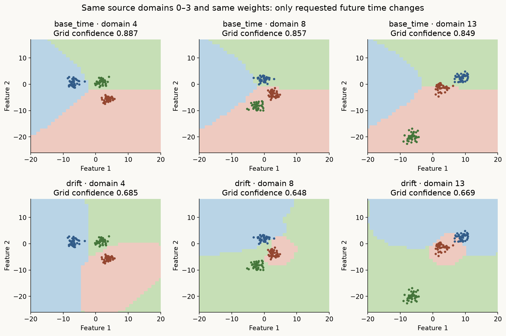
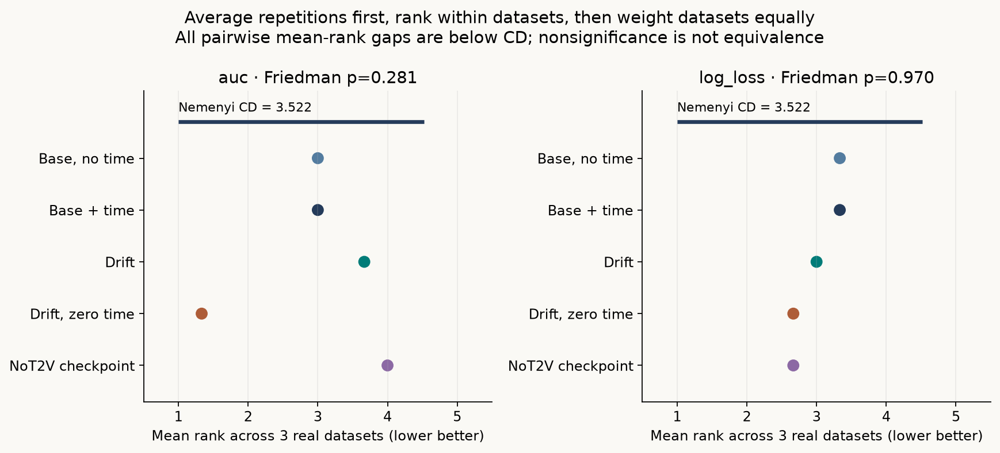

Year 2 · Quarter 3 · Lesson 068
Drift-Resilient TabPFN: learn how relationships change
Retrieve before reading
The task: extrapolate a learning problem¶
A sales conversion model trained through June may face a changed July relationship between lead activity and purchase. Holding out June rows estimates performance on the observed mixture. It does not establish whether the model can recognize a changing relationship and use its trend in July. For the relational mission, this distinction appears whenever customers, products, policies or measurements evolve. Even a point-in-time correct feature join can feed a prediction rule that has become stale.
Your outcome: trace how a temporal prior generates changing relationships; reconstruct the complete released Drift-Resilient TabPFN forward pass; and measure future-domain predictions with frozen historical contexts. You will implement five live operations, compare actual pretrained checkpoints, and explain a negative result without changing the evaluation after seeing it.
Before reading, retrieve three ideas in writing. What information may a query use in a PFN context? Why does a temporal split answer a different question from a random split? How can two predictors have identical accuracy but different log loss? The lab assumes matrix multiplication, sample standard deviation and softmax; each operation is restated below.
Built with TabPFN. Original weights and the visible re-expressed implementation use the supplied license. Read Helli et al., NeurIPS 2024, §§3–4 and Appendices A.4–A.8, alongside the pinned original implementation. The full paper and appendices were audited. The release contains the evaluator, benchmark generators and seven real checkpoints; the original synthetic pretraining-prior generator was not found in that release.
What shifts, and what is observed?¶
One row is (x, y, c): a feature vector, class label and ordered domain index. A domain is a period or ordered group within which we approximate the data distribution as stable. Prediction receives source rows (X_context, y_context, c_context) and a new (x_query, c_query). It does not receive future labels. The target is p(y_query | x_query, c_query, context), with future domain indices beyond those observed in context.
| Shift | What changes | What remains fixed in this special case |
|---|---|---|
| Covariate | Distribution of X | P(Y given X) |
| Label or prior-probability | Class prevalence P(Y) | P(X given Y) |
| Concept | P(Y given X) | P(X) may remain fixed |
Here “prior-probability shift” concerns class prevalence, not the PFN’s prior over whole generating mechanisms. Real data can combine these changes. An edge change does not automatically identify the shift category after variables are hidden and marginalized.
For a simple concept shift, let Y = 1[X1 + a(c) X2 > 0]. If a(c) grows from zero to one while the feature distribution stays fixed, the decision boundary rotates. A historical mixture fit may place one compromise boundary through all periods. A temporal model may infer a trajectory and condition the boundary on the requested period. But two trajectories can agree on all observed domains and diverge tomorrow. Extrapolation requires an assumption; timestamp encoding does not make the future uniquely identifiable.
The prior: a graph changes through another graph¶
An SCM, or structural causal model, generates variables through a directed acyclic graph. Each variable depends on its parents and sampled noise. The paper represents a causal variable by scalar subnodes, then expands parent-to-child assignments into hidden scalar computations. A causal relationship can therefore correspond to several functional edges, or neural weights.
The lab’s paper-grounded reconstruction has causal variables U, V, X and Y. U and V are noise roots. X has parents U and V; Y has parents U and X. X is computed through two hidden units:
hX0 = tanh(w0 U + w2 V + ε2)
hX1 = tanh(w1 U + w3 V + ε3)
X = w4 hX0 + w5 hX1 + ε4.
Y has two more hidden units using U and X, followed by its output. The target is 1[Y > 0]; observed features are U, V and X. All eight scalar nodes are explicitly computed. Each of twelve functional edges has a source, destination and causal-relationship ID. This fixed declared topology is an inspectable expansion, not the paper’s unpublished graph-sampling distribution.

Predict before tracing: if only U→X and X→Y shift, may the V→X weights change? No. Selecting sparse relationships means applying a mask through the edge-to-relationship mapping. It does not mean sampling unrelated masks over arbitrary weight coordinates. Our relationship IDs [0,0,1,1,-1,-1,2,2,3,3,-1,-1] and selected IDs [0,3] activate only coordinates 0, 1, 8 and 9. The hidden-to-output edges marked −1 stay fixed in this reconstruction.
A second randomly generated nonlinear graph H receives time and emits a vector of shifts. In the visible reconstruction, time drives five shared hidden causes, then four nonlinear causes, then twelve outputs:
r(c) = tanh(c A + b); s(c) = sin(r(c) W); ω(c) = 0.6 s(c) V.
A, b, W and V are sampled once per generated dataset. They are not resampled independently at each time or row. Outputs share hidden causes, making temporal shifts correlated. The update is
w_e(c) = w_e(base) + 1[relation(e) is selected] ω_e(c).
The additive update, activation choices, noise scale and topology above are explicit reconstruction choices. Algorithm 1 specifies a second-order SCM and a weight update; the release does not establish these exact hyperprior choices. We do not call this a reproduction of the original sampler.
A coherent numerical trace uses reconstruction seed 2. Base w0 = 0.1891 becomes 0.8277 at domain-time 0 and −0.1455 at domain-time 1. The V→X coefficient w2 = −0.4131 remains fixed. In the first row at time 0, U = 1.4285, V = −0.6676, X’s hidden values are 0.9017, 0.9544, and X = 2.6814 after noise. Y’s hidden values are −0.1612, 0.9475; its continuous output is −0.5573, hence class 0. Values are rounded from the saved trace.
The timescales matter. H generates one weight vector per domain. G_c stays fixed while many rows receive fresh noise. Only after sampling the dataset do we create context/query tasks. Resampling H independently per row would remove the coherent changing mechanism that time is meant to identify. The lab saves H parameters, masks, node values, weight trajectories and actual checkpoint predictions for three reconstructed tasks. Its shifted_weights TODO changes the generated data and the measured predictions.
Pretraining learns the inference rule¶
A PFN trains on many synthetic supervised tasks. Some labels become context inputs; held-out labels become targets. A schematic objective is
E_task [ − Σ_query log q_θ(y_query | X_context, y_context, c_context, x_query, c_query) ].
The expectation covers graphs, mechanisms, time domains and row noise. Gradient descent changes transformer parameters θ. It does not optimize the sampled graph H: H generates tasks. With sufficient capacity and suitable optimization, this expected-loss training approximates posterior prediction under the chosen synthetic prior. That interpretation is conditional on the prior and approximation quality, not a correctness guarantee for a new real process.
The original base and drift models each processed 30,720,000 synthetic datasets over 30 pretraining epochs. The paper describes three retrainings and eight GPUs per pretraining job; Appendix A.3 reports roughly seven/eight days for the variants. These are offline development costs. At prediction time the learned weights stay fixed and in-context computation supplies predictions without gradient updates. This lab loads every tensor of those original checkpoints. Original pretraining is NOT_RUN here.
The main contribution is broader than adding time. A baseline with time can represent a temporal relationship, but its inference rule was pretrained on a different task distribution. Comparing base-with-time and drift-with-time tests the released packages under a matched wrapper. It does not isolate every pretraining choice individually.
Time2Vec: preserve extrapolation, then encode the clock¶
The drift encoder rescales time using the source-context minimum and maximum. A query can map beyond [0,1]. Source times [0,2,4] and query time 6 give τ = (6−0)/(4−0) = 1.5. Including the query in range fitting would instead map it to 1, erasing its distance beyond the source endpoint. The source clips extreme normalized times to [−5,6], not [0,1].
If all source times equal 3, the source uses denominator 1: query time 4 maps to 1 and time 100 clips to 6. This avoids division by zero, but supplies no observed temporal trend. It is a degenerate case, not evidence of learning a trend from one period.

Time2Vec applies a learned affine phase a_j = ω_j τ + φ_j to 100 coordinates. Coordinate 0 stays linear; coordinates 1–99 use sine. The linear channel can represent a trend; sinusoidal channels supply learned periods/phases. Neither guarantees seasonal stability. An illustrative four-coordinate encoding with weights [1, π/2, π, 2π] and zero phases maps τ=1.5 to [1.5, 0.7071, −1, 0]. These four weights teach arithmetic; the actual model uses all 100 learned coordinates.
The release repeats that 100-vector for every feature group and concatenates it with two numeric coordinates before a 102→192 projection. It does not make a separate time token. An original forward comment describes a separate token; the executed repetition/concatenation and the checkpoint’s 102-column weight matrix determine the implemented architecture.
Model architecture: complete released checkpoint¶

Let B count datasets in a batch, T=C+Q their rows, F their numeric columns, and G=ceil(F/2) their groups. C labels are provided; Q are withheld. Follow the whole computation:
- Group and normalize. Pad F to an even number and group adjacent columns in pairs. Flatten groups into the batch axis for preprocessing. Pack varying coordinates first, impute missing values with source means, standardize with the source sample standard deviation plus
1e−6, clip to ±100, and multiply bysqrt(2 / active_coordinates)before padding back to two. Numeric NaN flags are disabled in these checkpoints. Source constant/active-coordinate checks inspect all supplied rows despite training-only comments. Mean/variance fitting still uses context rows. We preserve and disclose that query-dependent edge case rather than silently changing it and claiming parity. - Encode groups and time. Drift concatenates 100 time coordinates and two numeric values, then projects 102→192 with bias. Separately pretrained NoT2V concatenates one normalized time coordinate and projects 3→192. Base projects 2→192. Add a group identity drawn as a 48-dimensional Gaussian vector and projected to 192 with checkpoint weights. Our wrapper resets a recorded nonzero seed before each call; raw original calls otherwise advance the generator.
- Encode labels. Context classes are contiguous ordinal IDs. Query labels are censored, imputed for a value channel, and accompanied by missing flag −2. The ordinal encoder ranks values relative to observed classes. A query may therefore have value 1 and flag −2, distinguished from observed class 1 by its flag. A 2→192 projection makes one target token per row. Query targets are absent from the model’s forward signature.
- Repeat twelve blocks. State shape is B×T×(G+1)×192. Six-head attention first mixes feature-group and target tokens within each row. Row attention then mixes rows separately at each token position. Source rows attend to source rows. Query rows use source keys/values only, sharing the first key/value head across six query heads; source attention keeps all six. A bias-free 192→768→192 GELU MLP follows. Every sublayer adds its residual before non-affine LayerNorm, epsilon
1e−5. - Read the query target. Select Q target-token states; apply a biased 192→768→10 GELU head. Keep K observed-class logits and softmax. Softmax maps scores z to
exp(z_k)/Σ exp(z_j). Our matched wrapper uses temperature 1 for every arm.
Attention computes softmax(Q Kᵀ / sqrt(32)) V: a weighted average of value vectors. The head width is 192/6=32. The active original Torch ≥2 branch uses the exact inverse-square-root scale; the older fallback rounded that scalar. Our final operator matches the active branch. Query features enter their own row’s feature attention, but query rows never become memory keys. All twelve layers and every learned tensor are loaded, including time, group identity, label encoder and head. Full source checks compare input tokens, every block and logits across all three variants and both float32/float64 fixtures.
Decide the experiment before opening results¶
The author panel uses exact released dataset preparation and full datasets: Electricity (1,260 rows, 5 features), Parking Birmingham (1,294, 4), Chess (533, 9), and Intersecting Blobs (1,680, 2). Every processed feature, label, domain and column name matches the original loader. Numeric category codes are retained. The first three are real data; Blobs is a separate synthetic mechanism probe.
Electricity uses weekly groups after every-fourth-half-hour selection and a fixed 15-week segment; the executed code uses one week despite a nearby two-week comment. Parking predicts occupancy quartile at one specified car park with week as its domain. Chess groups twenty sorted games to approximate progress; this clock compresses irregular elapsed time. Blobs has three moving classes over fourteen domains. Appendix A.7.2.1 calls it binary in one sentence but then describes three classes; the release and this lab use three. Age bins and house-build years in the broader paper roster are ordered proxies, not automatically deployment-time forecasting tasks.

We predeclare source fractions 0.40, 0.55 and 0.70 of ordered domains, rounded down to whole domains. Context stays frozen before each boundary. Ten percent of each source domain (floor, at least one) is held out as ID test. All remaining future domains are OOD test. Their labels never enter prediction calls. Seeds 0, 1, 2 choose source holdouts and pair with original base/drift checkpoints 1, 2, 3 and group-vector seeds 17, 18, 19. All rows are retained in the final panel. The capped and rounded-scale pilots retain separate evidence/operator identities.
These repetitions vary cutoff, holdout and pretrained initialization together. Sample SD describes those declared repetitions; it neither separates variance components nor estimates uncertainty across independent datasets. Only NoT2V checkpoint 1 is released, so it is reused. Some ID slices lack a class: accuracy and log loss remain defined, but full-class AUC is unavailable. We do not retry labels into a more convenient ID sample.
| Arm | Context/data | Learned package | Question |
|---|---|---|---|
| base_no_time | Historical context, no time | Original base checkpoint | Historical mixture baseline |
| base_time | Same context, time appended | Same base checkpoint | Does ordinary time access help? |
| drift | Same context, separate domain input | Original drift checkpoint | Does the temporal package help? |
| drift_zero | Same features, all times zero | Same drift checkpoint | Sensitivity to clock information? |
| noT2V | Same context, normalized scalar time | Separately pretrained checkpoint 1 | Available training ablation behavior? |
Zero-time still passes through learned Time2Vec biases. It is not the paper’s NoT2V training ablation. Base-with-time changes feature grouping, as the original baseline strategy does; it is a package contrast, not a surgical prior-only intervention.
The paper uses three random eligible cutoffs, with 30–80% of both domains and samples in the source portion, class-coverage checks/retries, and three model initializations per split. Our deterministic fractions do not claim that full selection contract or factorial replication. Original preprocessing was selected on twelve validation datasets. The released best_dist uses robust preprocessing plus original features, fingerprints, 32 feature/class-shuffled views, 99% sample subsampling, outlier setting 7, temperature 0.9 and fp16. best_base uses a different selected recipe and temperature 0.75. Our raw numeric, one-view, fp32, temperature-1 comparison has no preprocessing search or class retries: INCOMPARABLE to reproducing paper Tables 1/2 or Figure 5.
What the published experiment establishes¶
The paper’s published means are separate from every local number below. On eight synthetic tasks, Table 1 reports OOD accuracy 0.754 for drift versus the strongest baseline 0.665. On ten real tasks those means are 0.736 versus 0.712. The real-data AUC difference is much smaller: 0.822 versus the strongest baseline 0.820. Stronger synthetic improvements do not establish a comparably large real-data advantage.
Table 2 compares drift with the separately pretrained NoT2V ablation: OOD accuracy 0.744 versus 0.742 and AUC 0.832 for both. The authors describe the Time2Vec contribution as statistically insignificant; this is why the lesson emphasizes the shifting prior. These results use the original selected recipes and repetitions. “Strongest baseline” can select different packages for different metrics, so this summary is not a pure prior-only causal intervention. See Tables 1–2 and Appendix A.4.1 for the reported uncertainty and exact comparator settings.
Read measured probabilities, not just winners¶
Before revealing results, predict whether drift must beat base-with-time on every real task, and whether confidence must fall monotonically into the future. Commit a direction and reason. The mechanism allows exceptions to both claims.
| Dataset | Arm | OOD accuracy ± SD | OOD AUC ± SD | OOD log loss ± SD |
|---|---|---|---|---|
| blobs | base_no_time | 0.4910 ± 0.0868 | 0.6398 ± 0.0158 | 3.1463 ± 1.0432 |
| blobs | base_time | 0.5961 ± 0.2934 | 0.7758 ± 0.1988 | 1.1951 ± 0.7433 |
| blobs | drift | 0.9487 ± 0.0406 | 0.9965 ± 0.0058 | 0.2019 ± 0.0714 |
| blobs | drift_zero | 0.4448 ± 0.0961 | 0.6241 ± 0.0787 | 2.8558 ± 0.6079 |
| blobs | noT2V | 0.9908 ± 0.0026 | 0.9998 ± 0.0001 | 0.1573 ± 0.1091 |
| chess | base_no_time | 0.7197 ± 0.0115 | 0.7860 ± 0.0306 | 0.6947 ± 0.0214 |
| chess | base_time | 0.7158 ± 0.0360 | 0.7872 ± 0.0337 | 0.7033 ± 0.0294 |
| chess | drift | 0.6762 ± 0.0540 | 0.7577 ± 0.0346 | 0.7721 ± 0.0537 |
| chess | drift_zero | 0.6947 ± 0.0146 | 0.7872 ± 0.0313 | 0.7101 ± 0.0330 |
| chess | noT2V | 0.6483 ± 0.0535 | 0.6358 ± 0.2443 | 0.8016 ± 0.1218 |
| electricity | base_no_time | 0.6435 ± 0.0573 | 0.7730 ± 0.0451 | 0.6979 ± 0.0882 |
| electricity | base_time | 0.6456 ± 0.1547 | 0.7492 ± 0.0541 | 0.6135 ± 0.1161 |
| electricity | drift | 0.6616 ± 0.0480 | 0.7467 ± 0.0602 | 0.6096 ± 0.0550 |
| electricity | drift_zero | 0.6343 ± 0.0086 | 0.7625 ± 0.0148 | 0.6843 ± 0.0047 |
| electricity | noT2V | 0.6773 ± 0.0577 | 0.7403 ± 0.0763 | 0.5924 ± 0.0595 |
| parking | base_no_time | 0.4725 ± 0.1848 | 0.8012 ± 0.0429 | 1.0072 ± 0.1754 |
| parking | base_time | 0.5101 ± 0.0589 | 0.8327 ± 0.0208 | 1.0233 ± 0.0675 |
| parking | drift | 0.6644 ± 0.0559 | 0.8496 ± 0.0255 | 0.8757 ± 0.0961 |
| parking | drift_zero | 0.6866 ± 0.0170 | 0.8653 ± 0.0175 | 0.8521 ± 0.0908 |
| parking | noT2V | 0.7119 ± 0.0336 | 0.8507 ± 0.0253 | 0.8686 ± 0.0702 |
The complete-model panel is mixed on real data. On Chess, drift worsens mean OOD accuracy from base-with-time 0.7158 to 0.6762 and log loss from 0.7033 to 0.7721. On Parking it raises accuracy from 0.5101 to 0.6644 and lowers loss from 1.0233 to 0.8757, but zeroing time improves the drift checkpoint further (accuracy 0.6866, loss 0.8521): clock sensitivity is not uniformly beneficial. Electricity illustrates metric disagreement: drift slightly improves accuracy (0.6456 to 0.6616) and log loss (0.6135 to 0.6096), while AUC falls from 0.7492 to 0.7467. Blobs is much stronger evidence for extrapolating this synthetic mechanism: drift accuracy 0.9487 versus base-with-time 0.5961; zero-time falls to 0.4448. The separately pretrained NoT2V checkpoint reaches 0.9908 on Blobs, supporting the distinction between the temporal prior and Time2Vec without isolating pretraining variance. These are local matched-wrapper results, not the paper benchmark. Across three real datasets the mean drift-minus-base-time log-loss gap is -0.0276, with a coarse dataset-bootstrap 95% percentile interval [-0.1476, 0.0688]. Three datasets cannot support a broad superiority conclusion; the bootstrap cannot invent unseen tasks.

Accuracy is the fraction whose highest-probability class is correct. AUC measures class-score ranking; multiclass AUC averages one-versus-rest class AUCs when every class is present. Log loss averages −log(probability of the true class), penalizing confident wrong predictions. Giving the true class 0.9 costs 0.105 nats; giving it 0.1 costs 2.303. Accuracy cannot distinguish a wrong 0.51/0.49 decision from a wrong 0.99/0.01 decision.

The horizon plots hold repetition 0’s context and checkpoint fixed. Each point scores only one future domain. Error need not grow smoothly: domains differ in prevalence and difficulty, and sample sizes are finite. These points diagnose where the model helps or fails; they are not independent dataset replications.

The boundary figure uses original Blobs data, fixed source domains 0–3, checkpoint 1 and a fixed 36×36 grid at domains 4, 8 and 13. Colors encode predicted class. Weights never change between panels. A changed boundary comes from conditioned inference, not later labels or gradient steps. The matched wrapper differs from published Figure 5: this is fresh evidence, not a reproduction claim.
On the fixed grid, drift mean maximum-class confidence is approximately 0.685, 0.648 and 0.669. It is lower than the corresponding base values but rises again at the last horizon. This contradicts a universal claim that uncertainty always grows with elapsed time. It is not a calibration measurement: grid points form an artificial spatial measure, and calibration needs outcomes under a defined distribution.

Average repetitions within each dataset, then rank methods within that dataset. The real-task aggregate weights Electricity, Parking and Chess equally; Blobs is separate. The displayed Friedman/Nemenyi calculation is exploratory on only three datasets. The paper’s Figure 10 instead uses Wilcoxon-Holm comparisons on its larger benchmark. Rows, seeds and domains cannot become extra independent datasets to manufacture narrower uncertainty.
Diagnose a failure and design the next experiment¶
Find the earliest changed computation. Wrong query time suggests context-plus-query range fitting or [0,1] clipping. Wrong input tokens with correct numeric z-scores suggest packing, concatenation, target censoring or group-RNG state. Correct input followed by a first-block discrepancy suggests attention axes, first-head query K/V sharing, scaling, or pre-norm versus post-norm. Correct logits with changed scores suggests temperature, class axis, row IDs or metric definitions.
Source correspondence covers the tested path. It does not establish exact historical library execution, original prior sampling/training, optimized 32-view inference, or paper-score reproduction. The reproduction contract provides executable smoke, full local and broader routes with precise remaining paper work. Original and live notebook identities stay separate; EXIT records the actual current implementation and run.
Lesson 064 exposed alternating feature/row attention, while Lesson 066 used a column→row→in-context prediction pipeline. This released temporal model also uses a two-axis transformer, but its new assumption comes from changing task mechanisms and a domain-conditioned encoding. Efficient representation and reliable drift extrapolation answer different questions; sharing an attention pattern does not confer the latter.
LoCalPFN chooses a local context and fine-tunes model weights. This model learns a temporal inductive bias during pretraining, then holds weights and historical context fixed while conditioning on the requested domain. Combining them may help, but nearest-neighbor selection may also erase older domains needed to infer a trend. A useful next experiment varies history length at a fixed prediction horizon, with the same checkpoint and test rows, before adding adaptation.
Teach back: explain why H generates a prior rather than acting as the deployed forecaster; why a relationship mask differs from one arbitrary edge; why normalized query time 1.5 is legitimate; and why zero-time sensitivity differs from NoT2V pretraining. Use one actual negative real-task result and the nonmonotonic confidence trace to limit your conclusion. Bring EXIT and your explanation to the tutor; notebook completion alone is not mastery evidence.